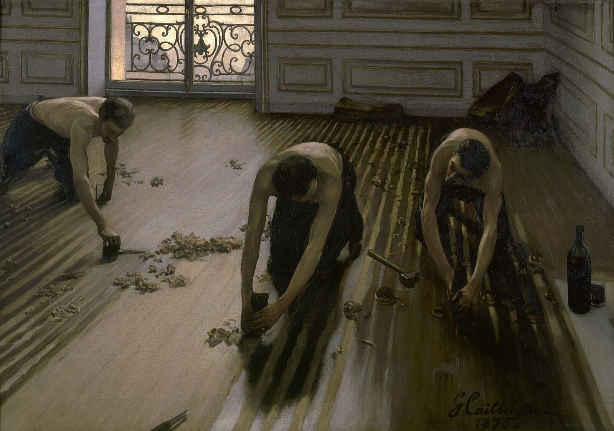
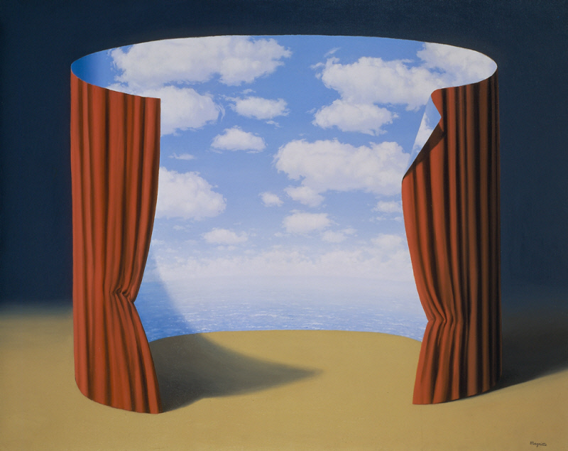
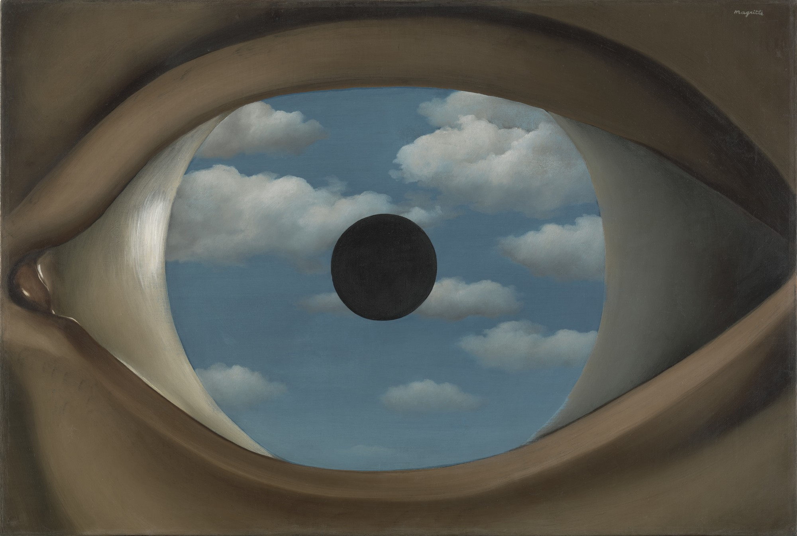
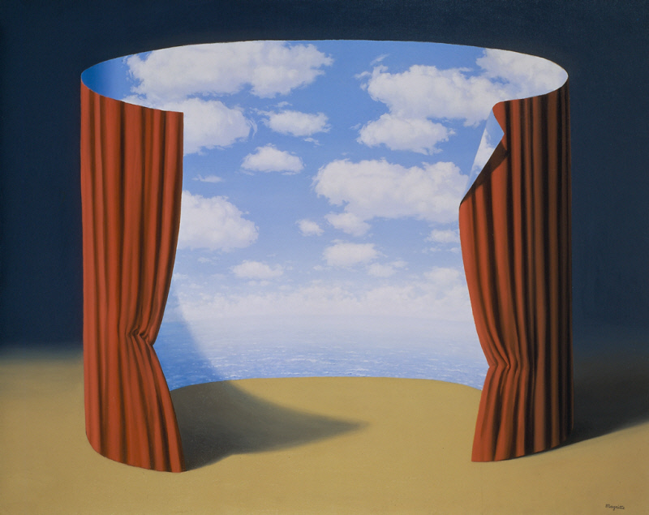
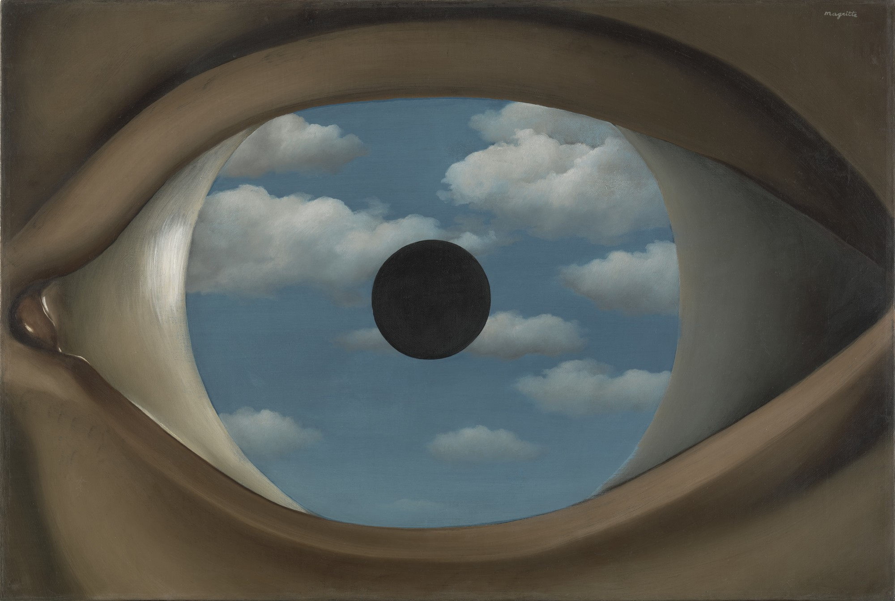

notes:
* discussing what makes a painting valuable
* camera allows a painting to be made into an narrative
* what we see, the environment in which we consume art, has an effect on how it is interpreted
* meaning can be manipluated in this way
episode 2
swarovski crystals
episode 3

notes:
* europe tended to focus on glorification and wealth
* art developed as a form of wealth and self-advertisment: publicity
*
our understanding of art and history is heavily influenced by the ruling class and the wealthy people, who had money
* "BY MEANS OF GOLD, ONE CAN EVEN GET SOULS INTO PARADISE"
- cristopher columbus
episode 4

notes:
*
"Oil painting, before it was anything else, was a celebration of private property. As an art-form it derived from the principle that you are what you have" - john berger
* the topic of publicity reminds me of karl marx and his critique on competetion
* "competition of the workers among themselves is … the sharpest weapon against the proletariat in the hands of the bourgeoisie" - fedrick engles
 


